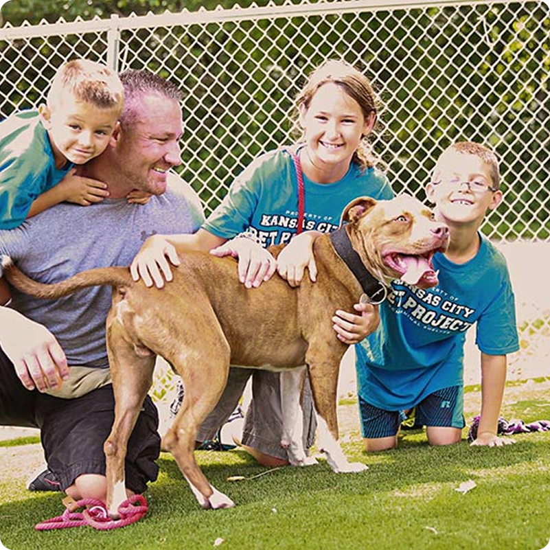

Animals Adopted
1,250 Animals Adopted

Happy Paws Animal Shelter was founded with one simple goal: to give abandoned and rescued animals a second chance at life. What began as a small local initiative has grown into a trusted community organization dedicated to animal welfare.
Our mission is to rescue, rehabilitate, and rehome animals in need while promoting responsible pet ownership. We believe every animal deserves compassion, care, and a loving forever home.

1,250 Animals Adopted
150 Active Volunteers
10 Years Serving the Community